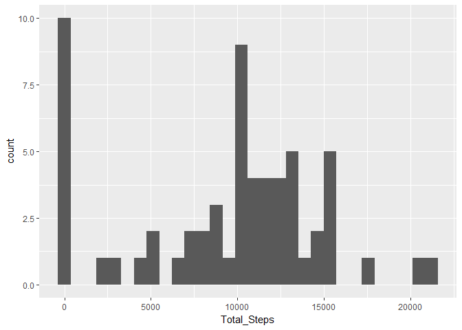
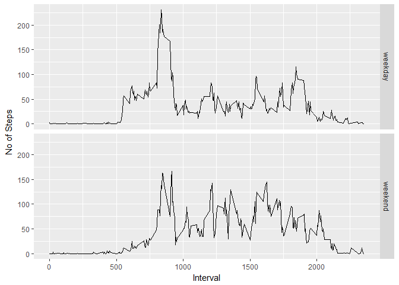

Reproducible Research: Peer Assessment 1
Loading and preprocessing the data
Get the feel of the data
#Let's read data first
activity_data_full=read.csv("activity.csv")
#Let's remove NAs
activity_data=activity_data_full[is.finite(activity_data_full$steps),]
#This is how our data looks
summary(activity_data)## steps date interval
## Min. : 0.00 2012-10-02: 288 Min. : 0.0
## 1st Qu.: 0.00 2012-10-03: 288 1st Qu.: 588.8
## Median : 0.00 2012-10-04: 288 Median :1177.5
## Mean : 37.38 2012-10-05: 288 Mean :1177.5
## 3rd Qu.: 12.00 2012-10-06: 288 3rd Qu.:1766.2
## Max. :806.00 2012-10-07: 288 Max. :2355.0
## (Other) :13536head(activity_data)## steps date interval
## 289 0 2012-10-02 0
## 290 0 2012-10-02 5
## 291 0 2012-10-02 10
## 292 0 2012-10-02 15
## 293 0 2012-10-02 20
## 294 0 2012-10-02 25What is mean total number of steps taken per day?
#Find out the average daily steps
d=sapply(split(activity_data,activity_data$date),function(chunk) sum(chunk$steps,na.rm = T))
#Let's decorate the data a bit
d=data.frame(d)
names(d)=c("Total_Steps")
#And this is how consolidated data looks like
summary(d)## Total_Steps
## Min. : 0
## 1st Qu.: 6778
## Median :10395
## Mean : 9354
## 3rd Qu.:12811
## Max. :21194head(d)## Total_Steps
## 2012-10-01 0
## 2012-10-02 126
## 2012-10-03 11352
## 2012-10-04 12116
## 2012-10-05 13294
## 2012-10-06 15420This is how our daily steps data looks like
library(ggplot2)## Warning: package 'ggplot2' was built under R version 3.3.3qplot(Total_Steps,data=d,geom="histogram",group="")## `stat_bin()` using `bins = 30`. Pick better value with `binwidth`.
Now let’s find out the average and median daily steps taken
mean_d=data.frame(sapply(split(activity_data,activity_data$date),function(chunk) mean(chunk$steps,na.rm = T)))
median_d=data.frame(sapply(split(activity_data,activity_data$date),function(chunk) median(chunk$steps,na.rm = T)))
names(mean_d)=c("Mean Steps")
names(median_d)=c("Median Steps")
summary(mean_d)## Mean Steps
## Min. : 0.1424
## 1st Qu.:30.6979
## Median :37.3785
## Mean :37.3826
## 3rd Qu.:46.1597
## Max. :73.5903
## NA's :8head(mean_d)## Mean Steps
## 2012-10-01 NaN
## 2012-10-02 0.43750
## 2012-10-03 39.41667
## 2012-10-04 42.06944
## 2012-10-05 46.15972
## 2012-10-06 53.54167summary(median_d)## Median Steps
## Min. :0
## 1st Qu.:0
## Median :0
## Mean :0
## 3rd Qu.:0
## Max. :0
## NA's :8head(median_d)## Median Steps
## 2012-10-01 NA
## 2012-10-02 0
## 2012-10-03 0
## 2012-10-04 0
## 2012-10-05 0
## 2012-10-06 0What’s average and median of total steps taken daily?
mean_before=mean(d$"Total_Steps")
print("Mean total steps")## [1] "Mean total steps"print(mean_before)## [1] 9354.23median_before=median(d$"Total_Steps")
print("Median total steps")## [1] "Median total steps"print(median_before)## [1] 10395What is the average daily activity pattern?
mean_d=data.frame(sapply(split(activity_data,activity_data$interval),function(chunk) mean(chunk$steps,na.rm = T)))
names(mean_d)=c("Mean_Steps")
summary(mean_d)## Mean_Steps
## Min. : 0.000
## 1st Qu.: 2.486
## Median : 34.113
## Mean : 37.383
## 3rd Qu.: 52.835
## Max. :206.170head(mean_d)## Mean_Steps
## 0 1.7169811
## 5 0.3396226
## 10 0.1320755
## 15 0.1509434
## 20 0.0754717
## 25 2.0943396Now let’s plot
ggplot(data=mean_d,aes(x=as.numeric(rownames(mean_d)),y=Mean_Steps,group=1))+geom_line() + labs(x="Time Interval", y="Mean Steps")
Which interval has the max steps on average?
max_interval=as.numeric(rownames(mean_d)[which.max(mean_d$Mean_Steps)])
print("Interval with max average steps")## [1] "Interval with max average steps"print(max_interval)## [1] 835Imputing missing values
#Let's check how many rows have missing data
print("Number of rows with NA's")## [1] "Number of rows with NA's"print(sum(!complete.cases(activity_data_full)))## [1] 2304Fill in the missing data with corresponding 5 min interval average
#Need to find mean steps with data without NAs
interval_means=as.numeric(mean_d$Mean_Steps)
#Now let's start from the start and fill in the missing data
activity_data_full[is.na(activity_data_full$steps),"steps"]=interval_means[as.factor(activity_data_full[is.na(activity_data_full$steps),"interval"])]
#Let's verify all the missing data is filled in
print("Number of rows with NA's")## [1] "Number of rows with NA's"print(sum(!complete.cases(activity_data_full)))## [1] 0#How does the filled in data look like
summary(activity_data_full)## steps date interval
## Min. : 0.00 2012-10-01: 288 Min. : 0.0
## 1st Qu.: 0.00 2012-10-02: 288 1st Qu.: 588.8
## Median : 0.00 2012-10-03: 288 Median :1177.5
## Mean : 37.38 2012-10-04: 288 Mean :1177.5
## 3rd Qu.: 27.00 2012-10-05: 288 3rd Qu.:1766.2
## Max. :806.00 2012-10-06: 288 Max. :2355.0
## (Other) :15840activity_data=activity_data_fullNow let’s check the daily total steps again
d=sapply(split(activity_data,activity_data$date),function(chunk) sum(chunk$steps,na.rm = T))
d=data.frame(d)
names(d)=c("Total_Steps")
summary(d)## Total_Steps
## Min. : 41
## 1st Qu.: 9819
## Median :10766
## Mean :10766
## 3rd Qu.:12811
## Max. :21194head(d)## Total_Steps
## 2012-10-01 10766.19
## 2012-10-02 126.00
## 2012-10-03 11352.00
## 2012-10-04 12116.00
## 2012-10-05 13294.00
## 2012-10-06 15420.00#Plot the daily steps
qplot(Total_Steps,data=d,geom="histogram",group="")## `stat_bin()` using `bins = 30`. Pick better value with `binwidth`.
mean_d=data.frame(sapply(split(activity_data,activity_data$date),function(chunk) mean(chunk$steps,na.rm = T)))
median_d=data.frame(sapply(split(activity_data,activity_data$date),function(chunk) median(chunk$steps,na.rm = T)))
names(mean_d)=c("Mean Steps")
names(median_d)=c("Median Steps")
summary(mean_d)## Mean Steps
## Min. : 0.1424
## 1st Qu.:34.0938
## Median :37.3826
## Mean :37.3826
## 3rd Qu.:44.4826
## Max. :73.5903head(mean_d)## Mean Steps
## 2012-10-01 37.38260
## 2012-10-02 0.43750
## 2012-10-03 39.41667
## 2012-10-04 42.06944
## 2012-10-05 46.15972
## 2012-10-06 53.54167summary(median_d)## Median Steps
## Min. : 0.000
## 1st Qu.: 0.000
## Median : 0.000
## Mean : 4.474
## 3rd Qu.: 0.000
## Max. :34.113head(median_d)## Median Steps
## 2012-10-01 34.11321
## 2012-10-02 0.00000
## 2012-10-03 0.00000
## 2012-10-04 0.00000
## 2012-10-05 0.00000
## 2012-10-06 0.00000What’s average and median of total steps taken daily?
mean_after=mean(d$"Total_Steps")
print("Mean total steps")## [1] "Mean total steps"print(mean_after)## [1] 10766.19median_after=median(d$"Total_Steps")
print("Median total steps")## [1] "Median total steps"print(median_after)## [1] 10766.19Let’s compare before and after imputing the data
print("Mean total steps before = ")## [1] "Mean total steps before = "print(mean_before)## [1] 9354.23print("Mean total steps after=")## [1] "Mean total steps after="print(mean_after)## [1] 10766.19print("Median total steps before=")## [1] "Median total steps before="print(median_before)## [1] 10395print("Median total steps after=")## [1] "Median total steps after="print(median_after)## [1] 10766.19Are there differences in activity patterns between weekdays and weekends?
#Let's find out which days are weekdays and which are weekends
library(lubridate)## Warning: package 'lubridate' was built under R version 3.3.3##
## Attaching package: 'lubridate'## The following object is masked from 'package:base':
##
## datedates=ymd(activity_data$date)
wd=wday(dates)
weekendcheck=wd
#Assuming sun and sat are weekends
weekendcheck[!(wd==1 | wd==7)]=0
weekendcheck[weekendcheck!=0]=1
activity_data=cbind(activity_data,factor(x=weekendcheck,labels=c("weekday","weekend")))
#Let's group based on weekend or not and check how the data looks like
library(plyr)## Warning: package 'plyr' was built under R version 3.3.3##
## Attaching package: 'plyr'## The following object is masked from 'package:lubridate':
##
## heregroupcols=c("interval","weekendcheck")
datacols=c("steps")
mean_d=ddply(activity_data,groupcols, function(x) colMeans(x[datacols]))
mean_d$weekendcheck=factor(x=mean_d$weekendcheck,labels=c("weekday","weekend"))
summary(mean_d)## interval weekendcheck steps
## Min. : 0.0 weekday:288 Min. : 0.000
## 1st Qu.: 588.8 weekend:288 1st Qu.: 2.047
## Median :1177.5 Median : 28.133
## Mean :1177.5 Mean : 38.988
## 3rd Qu.:1766.2 3rd Qu.: 61.263
## Max. :2355.0 Max. :230.378head(mean_d)## interval weekendcheck steps
## 1 0 weekday 2.25115304
## 2 0 weekend 0.21462264
## 3 5 weekday 0.44528302
## 4 5 weekend 0.04245283
## 5 10 weekday 0.17316562
## 6 10 weekend 0.01650943Let’s plot the data grouped by weekend or not
ggplot(data=mean_d,aes(x=as.numeric(interval),y=steps,group=1))+geom_line()+facet_grid(weekendcheck~.) + labs(x="Interval",y="No of Steps")
That’s it, r markdown rocks…!!!